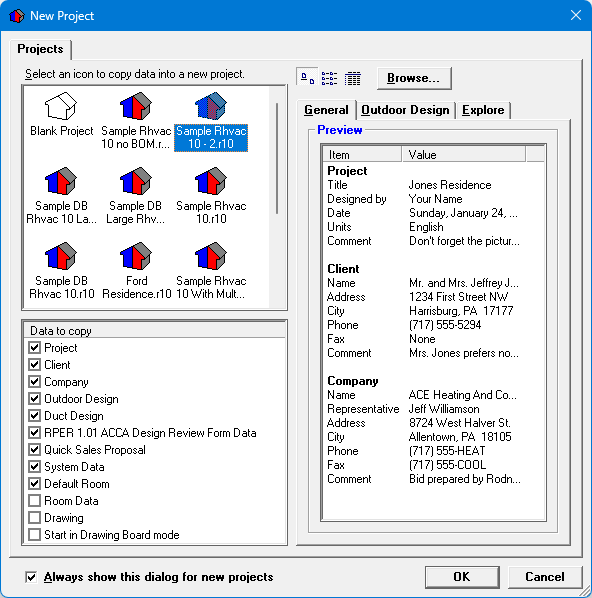

New Project (File Menu) |
  
|
New Project (File Menu) |
|
Icon:  . Keyboard shortcut: CTRL+N
. Keyboard shortcut: CTRL+N
Creates a new, untitled project for you to work with. Optionally displays the New Project dialog where you can copy data from another project as a template for the new project. If there is currently another project open when you create a new project, you will be prompted to save your work.
Note: Once you are working in a new, untitled project, you should immediately save it. Saving your project enables you to recover data later if something such as a power failure happens while you are entering data in a project. If you have already named the project once, you will be able to recover most of your data, even beyond your most recent save. If you have not ever saved the project, all of your data will be lost.
For more information about the New Project dialog, scroll down past the following graphic:

Projects List: Lists all of the projects in your current Projects folder, plus one icon for a "Blank Project". Selecting "Blank Project" will start a new, untitled project with virtually no data in it.
Toolbar (Large Icons, List, Details buttons): Changes the display type of the icons listed in the Projects list.
Browse: Displays a Browse for Folder dialog where you can select a different folder to use to generate the list of projects in the Projects list.
Data to copy: Displays all of the different types of data in an Rhvac project file that can be copied into a new project. Put a check mark beside each type of data you want to copy from the project icon you select in the Projects list.
General, Outdoor Design and Explore Preview Area: Displays a brief preview of the data contained in the project file that you are going to copy.
Always show this dialog for new projects: Uncheck this box if you don't want to display this dialog in the future when you click the New Project menu or toolbar button. You can always change this option later on the Options window.
OK: Closes this dialog and opens a new Untitled project with a copy of some of the the data from the project you selected in the Projects list.. Double clicking on a project in the Projects list has the same effect.
Cancel: Closes this dialog without opening a new project.